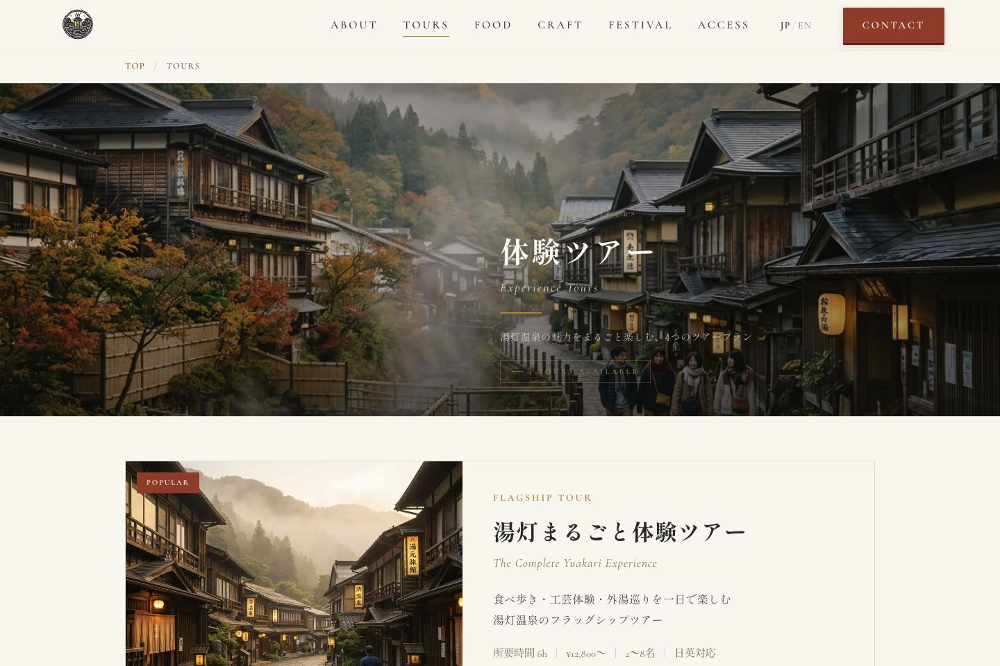
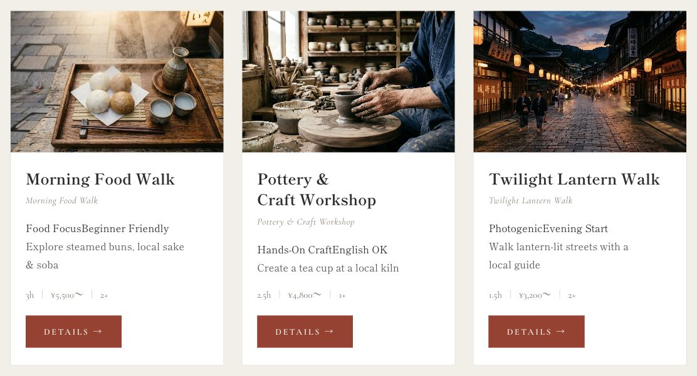

観光・体験サービスのWebサイト
湯灯商會
日英表示に対応した観光・体験サイト
ツアーの料金・所要時間を比較できる複数ページをデザインし、WordPressテーマとして構築。日本語・英語の表示切替と、選んだ言語を保つ処理も実装しました。
ツアー紹介の閲覧デモです。予約・決済はできません。 別タブで開きます。

- 制作形態
- 自主制作・架空案件
- 担当
- 情報設計・デザイン・フロントエンド・テーマ制作
- 期間・状態
- 制作デモを公開中
- 公開範囲
- 制作デモ（予約・購入・送信なし）
ターゲット・ペルソナ
設計上の想定
- ターゲット
- 温泉旅行を計画する個人・少人数の旅行者
- ペルソナ
- 限られた滞在時間の中で、予算に合う体験を同行者と比較して決めたい人。

日英切替の実装
選択言語を引き継ぐ
画面内の対応テキストと案内を日本語・英語で切り替えます。表示文字だけでなく、htmlのlang属性、ボタンの読み上げラベル、言語の選択状態も更新しています。
選択言語をlocalStorageへ保存するため、別ページへ移動しても同じ言語で読めます。下の画像は、公開デモで実際に英語へ切り替えた画面です。
ツアーの実画面を見る制作の背景
ツアーを比較
温泉地に興味を持った旅行者が、体験の内容、所要時間、料金、アクセスを確かめる場面を想定しました。観光写真だけで終わらず、具体的な行動を選べる情報を用意しています。
ツアー、食、工芸、祭りはそれぞれ独立したページへ。目的が決まっている人はナビゲーションから、初めて見る人はトップの紹介から探せる構成です。
WordPressテーマ化
公開デモはWordPressのオリジナルテーマです。共通のヘッダー・フッターと、ツアー・食・工芸などの固定ページテンプレートに分け、ページごとに必要なCSS・JavaScriptを読み込んでいます。
ページ別のスタイルと共通のナビゲーションを分け、画面を横断しても統一した操作にしています。ツアー名・料金などは現在テンプレート内に記述しており、専用の管理画面からの更新は今後の課題です。
制作範囲
制作概要
- 構成
- 観光案内と体験ツアーの複数ページ
- 技術
- PHP / WordPress / HTML / CSS / JavaScript
- 実装範囲
- 固定ページ別テンプレート、共通パーツ、言語切替、フォームUI。予約・決済・専用の情報更新フォームは未実装。
実在の観光協会からの受託制作ではありません。運営担当者による継続更新の検証は行っていません。
実際の画面と操作は、制作デモで確認できます。